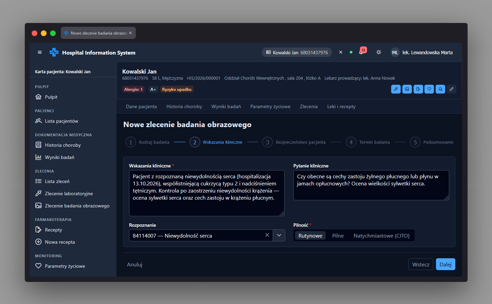

Kreator zlecenia obrazowego app-imaging-order-wizard-page
Ścieżka
Podstrona karty pacjenta:
/patients/:patientId/orders/imaging/new, osadzona w
powłoce karty pacjenta /patients/:patientId. Dostęp
chroniony przez
permissionGuard(PERMISSIONS.IMAGING_ORDER_CREATE) -
rola musi mieć uprawnienie do tworzenia zleceń obrazowych.
Opuszczenie strony z niezapisanymi zmianami w którymkolwiek z
kroków formularza jest przechwytywane przez
canDeactivate: unsavedChangesGuard
(potwierdzenie wyjścia). Istnieje też route na poziomie globalnym
/orders/imaging/new, który jest wyłącznie
przekierowaniem do wariantu przypisanego do konkretnego pacjenta -
nie ma samodzielnego widoku.
Przeznaczenie
Wieloetapowy kreator (p-stepper, liniowy) do złożenia
nowego zlecenia badania obrazowego dla pacjenta. Prowadzi przez
pięć kroków: rodzaj badania, wskazania kliniczne, bezpieczeństwo
pacjenta, termin badania oraz podsumowanie z wysyłką zlecenia.
Każdy krok ma własny formularz reaktywny z walidacją blokującą
przejście dalej, a krok bezpieczeństwa dodatkowo blokuje
kontynuację, jeśli nie zweryfikowano przeciwwskazań.
Dane wejściowe
- Krok 1 - Rodzaj badania: modalność (przyciski wyboru, wymagane), badanie z listy odpowiadającej wybranej modalności (wymagane), strona (lewa/prawa/obustronna) - pole widoczne tylko, gdy badanie wymaga określenia strony, oraz przełącznik „Z kontrastem” (aktywny tylko, gdy badanie dopuszcza kontrast).
- Krok 2 - Wskazania kliniczne: wskazania kliniczne (tekst, wymagane, min. 20 znaków), pytanie kliniczne (tekst, opcjonalne), rozpoznanie (autocomplete z wyszukiwaniem, opcjonalne) oraz pilność (przyciski wyboru, wymagane) - wybór pilności "stat" włącza w kroku 4 dodatkowe opcje terminowania.
-
Krok 3 - Bezpieczeństwo pacjenta: formularz
bezpieczeństwa (
app-imaging-safety-form) z polami warunkowymi: ciąża (gdy wymagana kontrola ciąży), rozrusznik serca/implanty metalowe, metalowe odłamki w ciele i klaustrofobia (tylko dla badań RM), uczulenie na środek kontrastowy, potwierdzenie ryzyka przy niskim eGFR (gdy eGFR < 30 mL/min/1.73m² przy zleceniu z kontrastem) oraz wymagane potwierdzenie weryfikacji bezpieczeństwa pacjenta. -
Krok 4 - Termin badania: data badania
(kalendarz), wybór konkretnego terminu z listy wolnych slotów
(
app-slot-picker) dla wybranej modalności i daty, lub (tylko dla zleceń "stat") przycisk „Najbliższy wolny termin” albo „Wykonaj natychmiast (bez terminu)”. - Krok 5 - Podsumowanie: brak dodatkowych pól - wyświetla zestawienie wprowadzonych danych i wysyła zlecenie po kliknięciu „Wyślij zlecenie”.
Akcje
-
Wczytuje katalog badań obrazowych
(
ImagingOrderService.getCatalog()) oraz dane bezpieczeństwa pacjenta: uczulenie na kontrast, ostatni wynik kreatyniny/eGFR i listę rozpoznań do autocomplete; brakujące dane bezpieczeństwa są sygnalizowane komunikatem, a nie ukrywane. - Po wybraniu modalności resetuje badanie, kontrast i stronę; po wybraniu badania ustawia wymagalność pola „Strona” i wyłącza kontrast, jeśli badanie go nie dopuszcza.
- Automatycznie zaznacza „Uczulenie na środek kontrastowy” w kroku 3, jeśli dane pacjenta wskazują na znaną alergię na kontrast.
- Blokuje przejście z kroku 3 dalej, jeśli bezpieczeństwo kontrastu nie zostało zweryfikowane albo wykryto nierozwiązane przeciwwskazanie bezpieczeństwa.
- Dla zlecenia z pilnością "stat" umożliwia wyszukanie najbliższego wolnego terminu (przeszukuje do 14 dni w przód) albo oznaczenie badania jako wykonywanego natychmiast, bez terminu.
-
Po wysłaniu zlecenia
(
ImagingOrderService.createOrder()) przekierowuje do karty pacjenta; błąd 409 (termin zajęty w międzyczasie) czyści wybrany slot i odświeża listę terminów, a błędy walidacji 422 są mapowane na odpowiednie pola formularza i pokazywane w powiadomieniu. - Przycisk „Anuluj” w każdym kroku przekierowuje do listy zleceń pacjenta.
Zrzut ekranu
